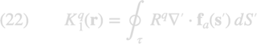
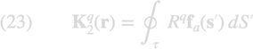
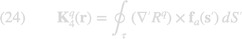
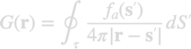
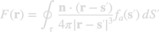
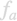

potbase
The singular parts of the Green function elements and of the single and double layer potentials can be performed analytically. The nanobem toolbox provides the potbase classes for the evaluation of such integrals. At present we only provide integration routines for triangular boundary elements using the potbase3 class.
Contents
Theory
In our numerical approach we follow the work of
- H�nninen, Taskinen, Sarvas, PIERS 63, 24 (2006)
In this work the following integrals are defined



Here is an observation point, the integration variable, the distance between these points, the boundary element over which is integrated, and the Raviart-Thomas shape element.
Using the results of the paper of H�nninen (2006) one can also compute the singular integrals needed for the quasistatic BEM approach


Here is the outer surface normal of the boundary and

the linear shape elements, which perform a linear interpolation from the triangle vertices.Initialization
% initialize singular integral evaluator
obj = potbase3( tau, PropertyPairs );
- tau vector of boundary elements
- 'order' number of q-values for singular value evaluation, default value is two
Methods
% evaluation of basic integrals, product output of POS and TAU % optional parameter IND can mask selected boundary elements [ K1, K2, K4 ] = ret1( obj, pos, ind ); % same size for POS and OBJ.TAU(IND) [ K1, K2, K4 ] = ret2( obj, pos, ind ); % evaluation of Green function elements, product output of POS and TAU % optional parameter IND can mask selected boundary elements [ G, F ] = stat1( obj, pos, ind ); % same size for POS and OBJ.TAU(IND) [ G, F ] = stat2( obj, pos, ind );
In the nanobem toolbox the analytic evaluation of integrals is used for the Green function computation in the quasistatic BEM approach, for the computation of potentials and fields away from the nanoparticle, using the representation formula, and the computation of the inhomogeneities for dipole excitations. As for the computation of the single and double layer potentials in the BEM approach for the solution of the full Maxwell equations, we rely on a full numerical evaluation using Duffy integrations.
Copyright 2022 Ulrich Hohenester